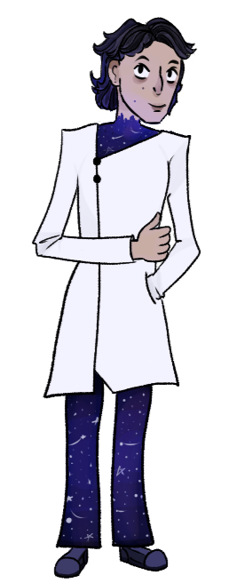
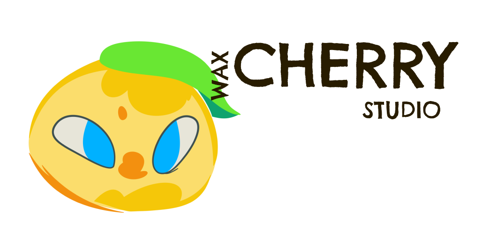
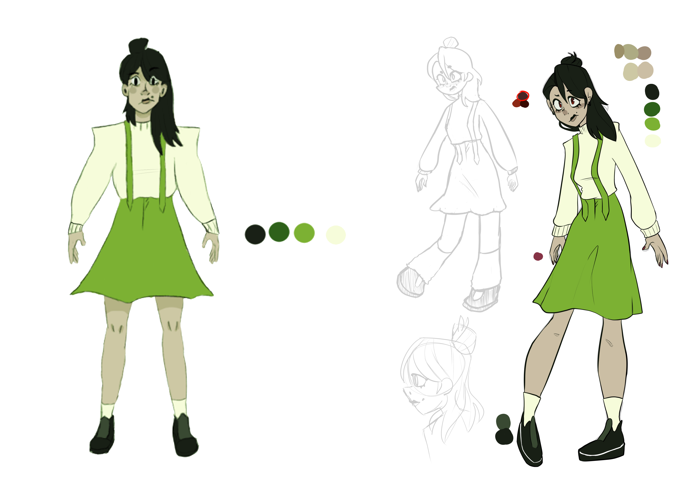
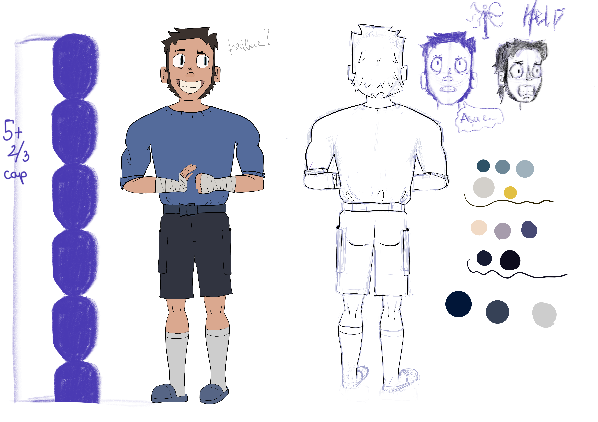
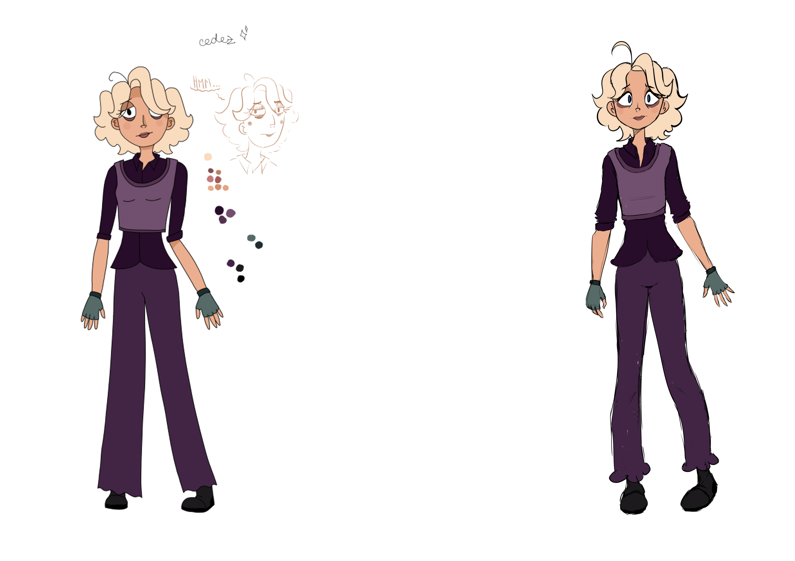
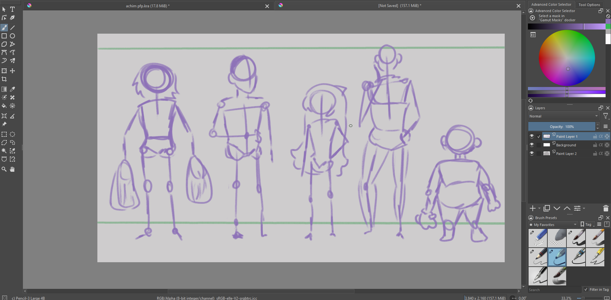

Nume : Roman
Prenume : Bianca-Georgiana
Clasa : X - XI C

Contacte :

ro.georg25@gmail.com
Creează. A crea înseamnă a fi om. Esența umană pornește de la darul de a crea, căci însuși creația umană este o artă.


Design Lucia - antagonistă principală
Design colaborativ împreună cu Viviana. Lucia a fost primul personaj la care am lucrat pentru studio, trebuind astfel să îi fiu actriță. Design „ascuțit”, baza triunghiulară, culori reci, haine second-hand.

Design Damian - personaj principal
Acesta a fost al treilea design la care am lucrat. El a fost primul design masculin la care am lucrat pentru studio: design dreptunghiular, miștocar și „bătăuș”.

Design Smaranda - personaj principal
Design-ul ei a fost realizat în colaborare împreună cu Viviana. Al doilea personaj realizat de mine pentru studio: design rotund, culori reci, însă fire obosită și oarecum mai calmă a trio-ului.

Design vânzător de caș bătrân
Acest design a fost realizat pentru scena prezentă la piață. Design simplu, inspirat din viața reală.

Concept line-up design
Personaje multiple care pot fi folosite în fundalul scenelor, fie în oraș, fie în stație. Un concept special la care m-am gândit a fost să nu desenez ochii, inspirat de la studioul Bluepoch.

Design avatar Achim
Design realizat pentru întâlnirea online a personajelor.
Schițe salvate tip „work in progress”, adică în timpul producției.



O felie pentru toți
Antidrog